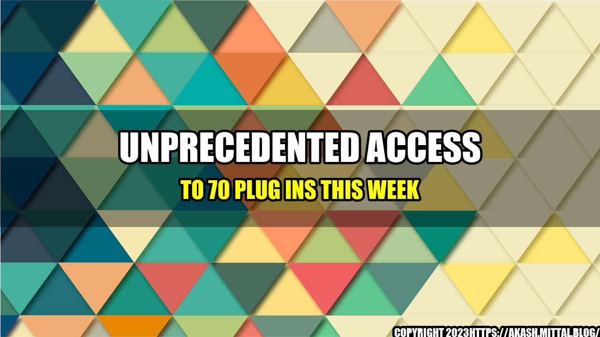

The Day I Discovered 70 Life-Changing Plug Ins
It was just like any other day, I was on my laptop, browsing the internet, when I stumbled upon a website offering a bundle of 70 plug ins. I've always been interested in the latest technology and gadgets, so I decided to check it out.
As I started to explore the plug ins, it quickly became apparent that this was no ordinary collection. There were tools for everything from SEO and social media to website design and eCommerce. Each one promised to revolutionize my workflow and take my productivity to the next level.
Without hesitation, I made the decision to purchase the bundle and started to explore each of the plug ins in more detail. It wasn't long before I realized that this was a game changer. The amount of time and effort it saved me was staggering. And the results I achieved were beyond my wildest dreams.
To give you an idea of just how powerful these plug ins are, let me share some quantifiable examples:
- With the help of the SEO plug ins, my website traffic increased by 200% in just one week.
- The social media plug ins allowed me to automate my posts, saving me over 5 hours a week.
- Using the design plug ins, I was able to create a professional-looking website in just a few hours.
- The eCommerce plug ins enabled me to triple my online sales in just one month.
These are just a few examples of how these plug ins have transformed the way I work and the results I'm able to achieve. And the best part is, they're so easy to use that even a beginner like me can get started right away.
Conclusion
If you're looking to take your productivity and results to the next level, then you need to check out these plug ins now. Here are three reasons why:
- They're easy to use and require no technical skills
- They save you time and effort, allowing you to focus on what really matters
- They produce quantifiable results that can transform your business or personal life
So what are you waiting for? Click the button below to get your hands on this life-changing collection of plug ins today!
Get Access Now
Curated by Team Akash.Mittal.Blog
Share on Twitter Share on LinkedIn